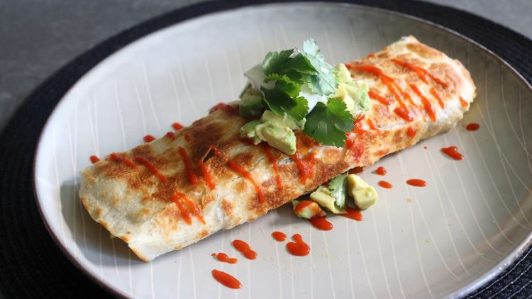

Back to Home
How to make a breakfast burrito

Everybody loves breakfast. Everybody loves burritos. Do you love burritos for breakfast? Find out here with this easy recipe!
You don't need lots of ingredients or experience with cooking, making this a dish for everybody.
Ingredients
- 1 cup grated Cheddar cheese
- ¼ cup sliced bell pepper
- 4 large eggs, beaten
- 4 slices bacon
- 1 pinch cayenne pepper, or to taste
Preparation
- Place bacon in a cold, nonstick pan over medium to medium-high heat.
- Place cubed potatoes into the pan of bacon fat and set heat to medium
- To make one breakfast burrito, place 2 strips cooked bacon back in the pan.
- Tilt the pan to make sure the egg is evenly distributed.
- ...
To unlock the rest of this recipe, you have to be a subscriber. Join now for only $29,99 per day!